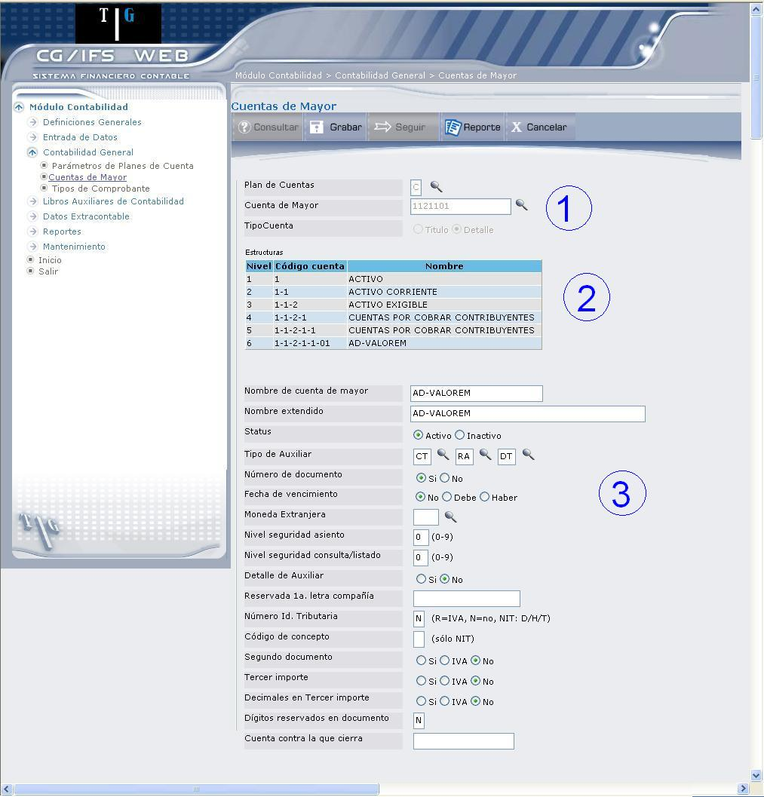

Actualización o Creación de Cuentas de Mayor de Detalle
En esta pantalla se pueden definir o modificar los parámetros de de Mayor de Detalle que es nueva o está activa, como se puede observar en la pantalla que muestra 1.11. Esta pantalla se ha dividido en tres secciones.

Figura 1. Cuentas de Mayor de Detalle.
SECCIÓN 1:
Los campos Plan de Cuentas, Cuenta de Mayor y Tipo Cuenta, se encuentran protegidos.
SECCIÓN 2:
Esta sección permite desplegar la estructura de la cuenta. Desde el primer nivel, hasta el nivel que corresponda a la cuenta seleccionada.
La finalidad de esta sección es hacer una comprobación visual de que de Mayor es efectivamente la deseada y está colocada en el lugar preciso, dentro de la jerarquía del Plan de Cuentas.
Al tratarse de la creación de una cuenta, el último nivel creado se encuentra sin nombre, ya que aún no se ha ingresado esta información.
SECCIÓN 3:
Presenta los campos que se describen a continuación:
Nombre de cuenta de mayor:
Permite modificar de Mayor. Este es el nombre de uso general y aunque sea abreviado, debe definir claramente la cuenta. En caso de ingreso, digite el nombre de de Mayor.
Nombre extendido:
Permite modificar este campo. Si se considera que el nombre de de Mayor anotado en la pantalla anterior no es suficientemente claro puede escribirse de nuevo aquí con menos abreviaturas. El sistema usa con preferencia este nombre, si existe, y siempre que tenga espacio suficiente en el listado.
Status:
Despliega el estado actual de la cuenta de mayor; si desea puede actualizar el estado (Activo o Inactivo). Si se trata de un ingreso, marque el casillero de selección correspondiente.
Tipo de Auxiliar: (opcional)
Si todo el movimiento que afecta a de Mayor, debe afectar también a una Cuenta de Auxiliar, se debe anotar o modificar el o los Tipos de Auxiliar correspondientes. En caso contrario, dejar en blanco. Esta es una de las decisiones más importantes a tomar en cuenta para el buen funcionamiento de en CG/Web. En caso de ingreso, seleccione los tipos de auxiliar, dando clic en el ícono ().
Número de Documento:
Dé clic en los casilleros Si o No; según se desee o no solicitar el número del documento al introducir movimientos sobre de Mayor.
Fecha de Vencimiento:
Dé clic en una de las siguientes alternativas:
- Seleccione No si de Mayor no requiere Fecha de Vencimiento.
- Seleccione Debe si de Mayor requiere de Vencimiento en los asientos del Debe.
- Seleccione Haber si de Mayor requiere de Vencimiento en los asientos del Haber.
Al seleccionar Debe o Haber es preciso que se haya asignado un Tipo de Auxiliar a de Mayor; si no es así, que se haya marcado el casillero Si en el campo Número de Documento.
Moneda Extranjera: (opcional)
Este campo está bloqueado si en los Parámetros del Plan de Cuentas se establece la utilización de Moneda Extranjera, ya que todas las Cuentas de Mayor utilizan obligatoriamente la misma moneda.
Si el Plan se define sólo con Moneda Local, este campo aparece disponible para utilizar otro tipo de moneda para de Mayor en particular.
Nivel seguridad asiento: (opcional)
Digite el nivel de seguridad mínimo necesario para poder imputar asientos a de Mayor. Si se deja el campo en blanco, asume 0.
Nivel seguridad consulta/listado: (opcional)
Digite el nivel de seguridad mínimo necesario para poder acceder a la información de de Mayor (consultas y listados). Si se deja en blanco el sistema asume 0.
Detalle de Auxiliar:
Marque el casillero No, si se desea que en el Listado del Mayor de Contabilidad, para las Cuentas de Mayor que trabajan con Auxiliar, no se desglosen los movimientos para cada Cuenta de Auxiliar.
Marque el casillero Si, si se desea desglosar los movimientos.
Reservada 1ª. letra compañía: (opcional)
Digite uno o varios caracteres para restringir el uso de esta Cuenta de Mayor a las Compañías pertenecientes al Plan de Cuentas que se está actualizando, cuyos códigos empiecen por cualquiera de los caracteres anotados.
Si se deja en blanco, el sistema asume que de Mayor será utilizada por todas las Compañías asociadas al Plan de Cuentas seleccionado.
Número Id. Tributaria: (opcional)
Digite R si de Mayor va a recibir asientos de IVA.
Digite N si no es un campo requerido para de Mayor.
Digite D si se requiere en los movimientos al Debe.
Digite H si se requiere en los movimientos al Haber.
Digite T si se requiere en todos los movimientos.
Se utiliza NIT como término general
Código de concepto: (opcional)
Este campo solo tiene aplicación para el Módulo NIT, desarrollado específicamente para el tratamiento impositivo de Colombia.
Segundo documento:
Marque una de las siguientes opciones:
- Seleccione Si, si desea que en todos los movimientos imputados a de Mayor, sea obligatorio anotar un segundo número de documento. Este número actúa como referencia para el usuario, CG/Web no lo usa para ningún proceso.
- Seleccione No, si de Mayor no requiere este dato.
Tercer importe: Marque una de las siguientes opciones:
- Seleccione Si, si se desea que en todos los asientos imputados a de Mayor es obligatorio anotar un tercer importe (por ejemplo para registrar las unidades físicas).
- Seleccione No, si de Mayor no requiere este dato.
Decimales en Tercer importe:
Marque una de las siguientes opciones:
Seleccione Si, si desea que los importes introducidos para este tipo de dato lleven decimales.
Seleccione No, si no se desea decimales en los importes de tercer importe.
Dígitos reservados en documento:
Los valores posibles de este parámetro son N, 0, 1 ó 2. Los valores 0, 1 y 2 indican el número de caracteres del número de documento que se deben reservar en la entrada de comprobantes, ya sea interactiva o batch, para posibles desgloses posteriores del documento.
Cuenta contra la que cierra: (opcional)
Anotar el código de de Mayor contra la que se efectuará la cancelación del saldo en el asiento de cierre de ejercicio económico. Esta cuenta debe estar definida previamente, ser de detalle, estar activa, pertenecer al mismo Plan de Cuentas y no tener asignados parámetros no permitidos para el programa de cierre (por ejemplo, número de documento o fecha de vencimiento).
Presione ENTER o el botón Grabar, para registrar las actualizaciones o la creación de de Mayor.
Los botones que se encuentran en la parte superior se explicaron anteriormente en Actualización o Creación de Cuentas de Mayor de Título.
Created with the Personal Edition of HelpNDoc: Write eBooks for the Kindle